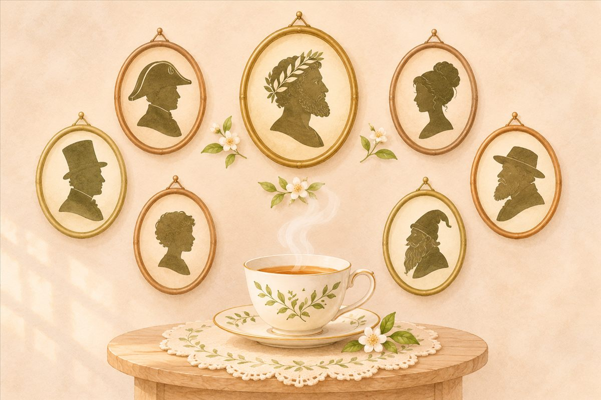

Čajové drobnosti · Firmy a ľudia
Ľudia na našej stránke

Na stránke sa spomína veľa ľudí a postáv – od starovekých básnikov cez cisárov a obchodníkov s čajom až po rozprávkové postavičky. Tu ich máte pokope: kto to bol a kde o ňom píšeme.
píšeme o ňom viac len spomenutý
A potom sú tu ľudia bez mien, bez ktorých by táto stránka nebola: moja rodina, priatelia a všetci, ktorí mi pomáhajú zbierať vrecúška. Ďakujem.